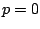
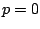

The development of optimal, or near optimal solution strategies for higher-order discretizations, including steady-state solutions methodologies, and implicit time integration strategies, remains one of the key determining factors in devising higher-order methods which are not just competitive but superior to lower-order methods in overall accuracy and efficiency. The goal of this work is to investigate and develop a fast and robust algorithm for the solution of high-order accurate discontinuous Galerkin discretizations of non-linear systems of conservation laws on unstructured grids.
We develop a spectral multigrid
method, whereby the coarse ``grid'' levels are constructed by
reducing the order ( ) of approximation of the
discretization using hierarchical basis
functions(
) of approximation of the
discretization using hierarchical basis
functions( -multigrid), keeping the grid elements fixed.
This approach is coupled with a traditional agglomeration
multigrid (
-multigrid), keeping the grid elements fixed.
This approach is coupled with a traditional agglomeration
multigrid ( -multigrid) approach for unstructured grids,
by constructing additional coarse levels at the lowest
() spectral level through element agglomeration. The
overall goal is the development of a solution algorithm
which delivers convergence rates which are independent of
``
-multigrid) approach for unstructured grids,
by constructing additional coarse levels at the lowest
() spectral level through element agglomeration. The
overall goal is the development of a solution algorithm
which delivers convergence rates which are independent of
`` '' (the order of accuracy of the discretization) and
independent of ``
'' (the order of accuracy of the discretization) and
independent of `` '' (the degree of mesh resolution), while
minimizing the cost of each iteration. The investigation of
efficient smoothers to be used at each level of the
multigrid algorithm is also pursued, and comparisons between
different integration strategies are made as well.
'' (the degree of mesh resolution), while
minimizing the cost of each iteration. The investigation of
efficient smoothers to be used at each level of the
multigrid algorithm is also pursued, and comparisons between
different integration strategies are made as well.